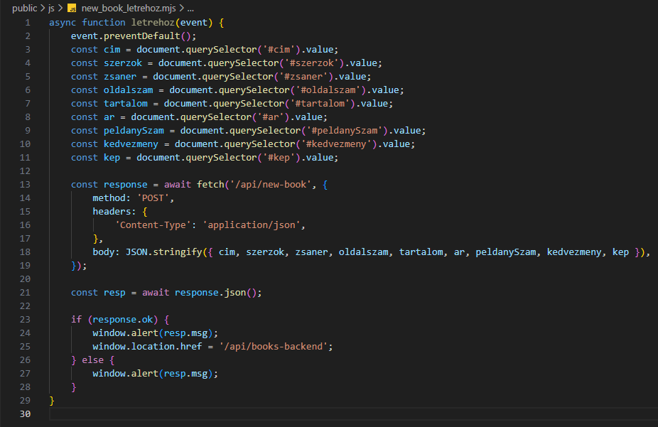

Új könyv felvétele - new_book_letrehoz.mjs
Új könyv felvétele - new_book_letrehoz.mjs
Ebben a részben szerkesztjük az public/js mappában az új könyv felvételéhez szükséges new_book_letrehoz.mjs állományt.
-
Szerkesszük a
new_book_letrehoz.mjsállományt.-
async function letrehoz(event) {...}- az új könyv létrehozásáért felelősaszinkronfüggvény. -
event.preventDefault();- az adatok elküldése után ne frissüljön az oldal. -
const response = await fetch('/api/new-book', {...});- afetchhívása után kapottpromise. -
method: 'POST',- adatokat küldünk a szervernek, tehát ahttp POST metódus-t használjuk. -
headers: { 'Content-Type': 'application/json' },- annak jelölése, hogy arequest bodytartalmátJSONformátumban fogjuk küldeni. -
body: JSON.stringify({...}),- csomagoljuk is be. -
const resp = await response.json();- a szervertől jövő válasz kicsomagolása, ha létezik. -
if (response.ok) { window.alert(resp.msg); window.location.href = '/api/books-backend'; }- ha sikeres a feltöltés, akkor ezt írjuk ki és menjünk át a/api/books-backendroute-ra. Még nem létezik! -
else { window.alert(resp.msg); }- ha nem sikeres a feltöltés, akkor ezt írjuk ki.
-
-
Az eddigi munka letölthető formátumban:
backend_03.rar
Letöltés és kicsomagolás után aGitBashfelületen abackendmappában adjuk ki a következő utasítást:
npm install -
A webszerver futtatásához adjuk ki a következő utasítást a
GitBashfelületen:
node --watch ./src/server.mjs